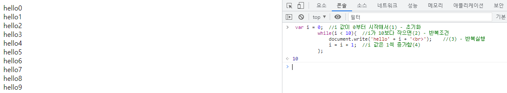
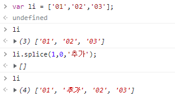
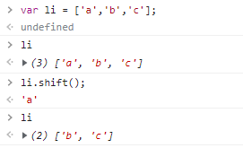

연산자
a = 1 에서 = 는 대입연산자 이다. 1을 a라고 대입하는것!
비교연산자
참과 거짓은 논리식의 결과값으로 주로 사용된다. 예를 들어, 숫자를 비교할 때 결과값으로 불값이 나온다.
ex) 5 < 3; => false / 5 > 3; => ture
== 동등연산자. =가 하나있는 대입연산자와 다르다. == 동등연산자는 true와 false를 만들어 낼 수 있다.
일치연산자
=== 일치연산자. 좌항과 우항이 '정확' 하게 같을 때 true, 다르면 false가 된다. (정보,데이터 타입등)

이렇듯 == 는 정보와 데이터타입 중 하나만 맞아도 true 이고
이렇듯 === 는 정보와 데이터타입 둘 다 같으면 true 고 / 하나라도 다르면 false 이다.
그렇기에 === 사용을 하여 정확하게 가르는걸 권한다.
등호
!= 는 부정을 의미한다. 같다 의 부정은 같지 않다 이다. ==와 정반대의 결과를 보여준다.

이 외에도 >, <, >=, <= 가 있다.
조건문
if
조건문은 if 로 시작한다. if 뒤에 괄호가 오고, 조건이 될 수 있는 값은 true,flase 이다.
 이처럼 true는 {} 안에 있는 것들도 실행시키고 false는 {} 안에 있는건 실행시키지 않는다.
이처럼 true는 {} 안에 있는 것들도 실행시키고 false는 {} 안에 있는건 실행시키지 않는다.
else / else if
else와 else if 는 좀 더 복잡하다.

if문 처음이 false니까 1은 실행안됨. 그다음 else if가 true니까 2가 실행되고 앞에서 2가 실행 되었으니 그 다음 3, 4는 실행 안됨

변수와 비교연산자

논리연산자
&& 는 and 의 뜻을 가진다.
|| 는 좌우항 중 하나라도 true라면 true가 되는 논리연산자이다.


반복문
while
반복문은 while과 for 로 시작한다. while 뒤에 괄호가 오고, 조건이 될 수 있는 값은 true,flase(boolean값) 이다.

for
i = 1 + 1; 와 i++; 는 같은 의미이다.
반복문의 제어
break
continue
중첩반복문
함수 function
출력 - 리턴
입력 - 매개변수,인자
배열
여러개의 값을 출력할 때 특히 유용함
배열의 사용

배열의 제어
push - 추가(단수)
concat - 추가(복수)
unshift - 추가(배열의 시작점에)
splice - 추가(배열의 특정 구간에)
 특정 구간에 삭제 없이 추가
특정 구간에 삭제 후 추가
배열의 제거
shift - 제거(배열의 앞에부터)

pop - 제거(배열의 끝에부터)
배열의 정렬
sort - 정렬(순서대로)
reverse - 정렬(역순)